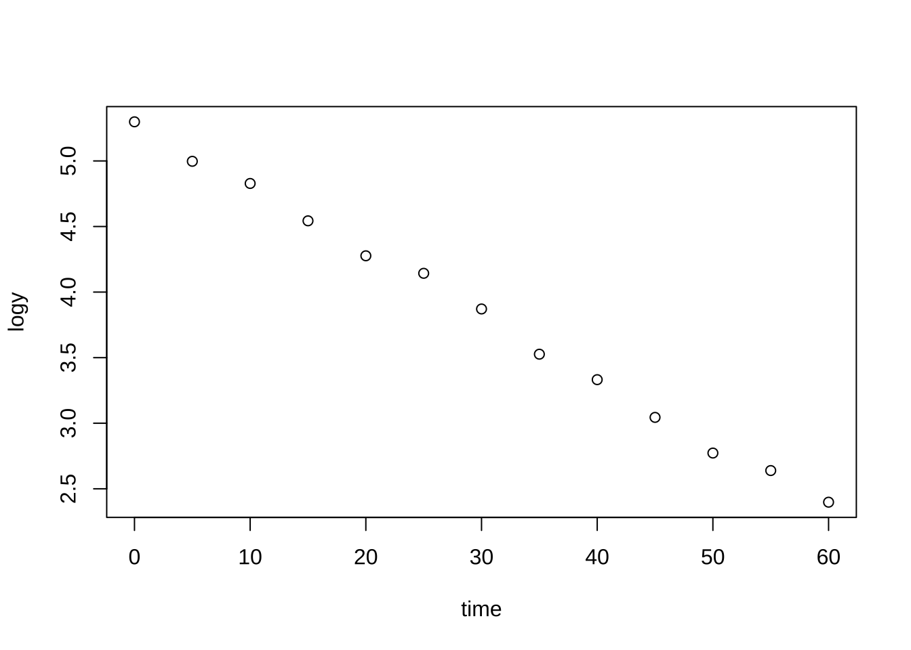

plot(y~time, regbook::bug)부록 H — 중회귀 모형 진단
H.1 변수변환
H.1.1 예제 4.8
여기서 이용한 자료 bug 는 살충제의 독성실험에서 살충제에 노출된 벌레들의 생존개체수를 시간대별로 관측한 것이다.
y:생존벌레의 수time:시간(분)
이제 로그변화을 고려해 보자.
bug2 <-regbook::bug
bug2$logy <- log(bug2$y)
plot(logy~time, bug2)
변환된 자료에 대한 회귀분석을 수행해 보자.
fitlog <- lm(logy~time, bug2)
plot(logy~time, bug2)
abline(fitlog)
H.2 Box-Cox 변환
Box-Cox 변환은 다음과 같이 수행한다. 패키지 MASS 의 함수 boxcox 를 이용한다.
H.2.1 예제 4.10
foot:발길이(mm), 양말을 벗은 상태로 측정하였고 오른쪽 발만 측정하였다.forearm: 팔안쪽길이(mm), 손목부터 팔꿈치가 접히는 부분까지의 길이이다. 오른쪽 팔만 측정하였다.
변환이 필요없는 경우에 대한 예제이다.
# plot histogram of foot by ggplot2
aflength %>% ggplot(aes(x=foot)) + geom_histogram(binwidth=15, fill="skyblue", color="black") + theme_minimal()plot(foot ~ forearm, data=aflength)ex411 <- boxcox(lm(foot ~ forearm, data=aflength))
H.2.2 예제 4.11
예제 4.11 자료 wool 는 Box & Cox의 1964년 논문에서 사용한 예제로, 양모의 강력을 알아보기 위해 \(3^3\) 요인실험을 수행한 결과이다.
cycle:반응변수. 시편이 끊어질 때까지의 측정 횟수.length:시편의 길이load: 시편에 가한 하중amplitude:하중을 가한 폭
반응변수 cycle 의 히스토그램능 보면 오른쪽으로 매우 치우친 분포로서 정규분포와 매우 다른 모양을 보인다.
# plot histogram of foot by ggplot2
wool %>% ggplot(aes(x=cycle)) + geom_histogram(binwidth=200, fill="skyblue", color="black") + theme_minimal()
잔차 분석의 결과를 보면 잔차에
woolfm1 <- lm(cycle~length + amplitude + load, data=wool)
summary(woolfm1)
Call:
lm(formula = cycle ~ length + amplitude + load, data = wool)
Residuals:
Min 1Q Median 3Q Max
-644.5 -279.1 -150.2 199.5 1268.0
Coefficients:
Estimate Std. Error t value Pr(>|t|)
(Intercept) 4521.370 1621.721 2.788 0.010454 *
length 13.200 2.301 5.736 7.66e-06 ***
amplitude -535.833 115.057 -4.657 0.000109 ***
load -62.167 23.011 -2.702 0.012734 *
---
Signif. codes: 0 '***' 0.001 '**' 0.01 '*' 0.05 '.' 0.1 ' ' 1
Residual standard error: 488.1 on 23 degrees of freedom
Multiple R-squared: 0.7291, Adjusted R-squared: 0.6937
F-statistic: 20.63 on 3 and 23 DF, p-value: 1.028e-06이제 Box-Cox 변환을 적용해 보자.
boxcox(woolfm1)위의 결과에서 \(\lambda = 0\)이 가장 좋은 변환으로 나타났다. 이는 로그 변환이 가장 적절하다는 의미이다. 이제 이 변환을 적용해 보자.
wool$logcycle <- log(wool$cycle)
woolfm2 <- lm(logcycle~length + amplitude + load, data=wool)
summary(woolfm2)
Call:
lm(formula = logcycle ~ length + amplitude + load, data = wool)
Residuals:
Min 1Q Median 3Q Max
-0.43592 -0.11250 0.00802 0.11635 0.26790
Coefficients:
Estimate Std. Error t value Pr(>|t|)
(Intercept) 10.551813 0.616683 17.111 1.41e-14 ***
length 0.016648 0.000875 19.025 1.43e-15 ***
amplitude -0.630866 0.043752 -14.419 5.22e-13 ***
load -0.078524 0.008750 -8.974 5.66e-09 ***
---
Signif. codes: 0 '***' 0.001 '**' 0.01 '*' 0.05 '.' 0.1 ' ' 1
Residual standard error: 0.1856 on 23 degrees of freedom
Multiple R-squared: 0.9658, Adjusted R-squared: 0.9614
F-statistic: 216.8 on 3 and 23 DF, p-value: < 2.2e-16plot(woolfm2)


H.3 다중공선성
H.3.1 고유값과 고유벡터에 대한 이론
선형모형 \(E(\pmb y | \pmb X) = \pmb X \pmb \beta\) 에서 계획행렬 \(\pmb X\)의 열들이 선형독립이 아닌 경우 다중공선성이 발생한다. 다중공선성은 계획행렬 \(\pmb X\)의 열들이 선형종속인 경우에 발생한다.
대칭행렬 \(\pmb X^t \pmb X\)의 고유값 \(\lambda_i\)와 그에 대응하는 고유벡터 \(\pmb p_i\)는 다음을 만족하는 실수와 벡터이다.
\[ (\pmb X^t \pmb X ) \pmb p_i = \lambda_i \pmb p_i \]
고유값 \(\lambda_i\)을 구하는 방법은 다음의 방정식을 만족하는 해를 구하는 것이다.
\[ det \left ( \pmb X^t \pmb X - \lambda_i \pmb I \right ) = 0\]
여기서 \(det(\pmb A)\)는 행렬 \(\pmb A\)의 행렬식을 의미한다.
\(\lambda_1 \ge \lambda_2 \ge \dots \ge \lambda_{p}\)를 \(\pmb X^t \pmb X\)의 고유값이라고 하자. \(\pmb X^t \pmb X\)의 각 고유값에 대한 정규직교 고유벡터(orthonormal eigenvector)를 \(\pmb p_1, \pmb p_2,\dots,\pmb p_{p}\)라고 하자, 즉
\[ \pmb p_i^t \pmb p_i = 1 , \quad \pmb p_i^t \pmb p_j = 0 \quad (i \ne j) \]
더 나아가 행렬 \(\pmb P\)를 고유벡터를 모아놓은 행렬로 정의하자.
\[ \pmb P=[\pmb p_1 ~ \pmb p_2 ~\dots ~ \pmb p_{p} ] \]
이때 \(p \times p\) - 차원의 행렬 \(\pmb P\)는 직교행렬이다.
\[ \pmb P^t \pmb P =\pmb P \pmb P^t =\pmb I \]
이제 다음과 같이 \(\pmb X^t \pmb X\)를 나타낼 수 있다.
\[ \pmb P^t (\pmb X^t \pmb X) \pmb P = \text{diag}(\lambda_1 , \lambda_2 , \dots , \lambda_{p}) = \pmb \Lambda \]
또한
\[ \pmb P^t (\pmb X^t \pmb X)^{-1} \pmb P = \text{diag} \left (\frac{1}{\lambda_1} , \frac{1}{\lambda_2} , \dots , \frac{1}{\lambda_{p}} \right ) = \pmb \Lambda^{-1} \]
위의 식에서 알 수 있듯이 \(1/\lambda_i\)는 \((\pmb X^t \pmb X)^{-1}\)의 고유값이다.
행렬 \(\pmb P\)가 직교행렬이기 때문에 다음과 같은 표현도 가능하다.
\[ (\pmb X^t \pmb X) = \pmb P \pmb \Lambda \pmb P^t, \quad (\pmb X^t \pmb X)^{-1} = \pmb P \pmb \Lambda^{-1} \pmb P^t \]
고유벡터와 고유값의 정의에 의하여 고유값 \(\lambda_k\)이 매우 0에 가까우면 다음이 성립하고
\[ \pmb p_k^t (\pmb X^t \pmb X) \pmb p_k = (\pmb X \pmb p_k)^t ( \pmb X \pmb p_k) \approx 0 \] 위의 식은 다음과 같이 행렬 \(\pmb X\)의 열들간에 선형관계 $ X p_k = $ 이 있다는 것을 의미한다.
\[ p_{1k} \pmb x_1 + p_{2k} \pmb x_2 + \dots p_{p,k} \pmb x_p \approx 0 \]
위에서 \(\pmb p_k\)와 \(\pmb X\)는 다음과 같이 표시한다.
\[ \pmb X=[\pmb x_1~ \pmb x_2~ \dots~\pmb x_{p}], \quad \pmb p_k = \begin{bmatrix} p_{1k} \\ p_{2k} \\ \vdots \\ p_{p,k} \end{bmatrix}\]
또한 회귀계수 벡터 \(\hat \beta\)의 공분산 행렬이 다음과 같이 주어지므로
\[ Cov(\hat {\pmb \beta}) = \sigma^2 (\pmb X^t \pmb X)^{-1} = \sigma^2 \pmb P \pmb \Lambda^{-1} \pmb P^t \tag{H.1}\]
다음과 같은 식이 성립한다.
\[ var(\hat \beta_k) / \sigma^2 = \frac{p^2_{k1}}{\lambda_1} + \frac{p^2_{k2}}{\lambda_2} + \dots \frac{p^2_{k, p}}{\lambda_{p}} \tag{H.2}\]
H.3.2 고유값과 고유벡터에 대한 예제: 두 개의 독립변수
이제 다음과 두 개의 독립변수가 있는 회귀 모형을 고려해 보자.
\[ y_i = \beta_0 + \beta_1 x_{i1} + \beta_2 x_{i2} + e_i, i=1,2,\cdots,n \]
절편을 제외한 두 개의 표준화된 독립변수들로 이루어진 행렬을 \(\pmb X\)로 표시하자.
\[ \pmb X = [ \pmb x_1 ~ \pmb x_2 ] \]
위에서 디자인 행렬 \(\pmb X\)는 원래 독립변수의 디자인 행렬 \(X\)의 열들을 표준화한 변수로 구성된 것이다..
\[ \sum_{i=1}^n x_{i1} =0, \quad \sum_{i=1}^n x_{i2} =0, \quad \sum_{i=1}^n x_{i1}^2 =1, \quad \sum_{i=1}^n x_{i2}^2 =1, \quad \sum_{i=1}^n x_{i1} x_{i2} =\rho \]
이제 \(\pmb X^t \pmb X\)는 두 독립변수의 상관계수 행렬임을 알 수 있다.
\[ \pmb X^t \pmb X = \begin{bmatrix} 1 & \rho \\ \rho & 1 \end{bmatrix} =\pmb R, \quad 0 < \rho < 1 \]
여기서 두 독립변수 \(x_1\)과 \(x_2\)의 상관계수 \(\rho\)는 0보다 크다고 가정하자.
이제 \(\pmb X^t \pmb X\)의 고유값(\(\lambda_i\))과 고유벡터(\(\pmb p_i\))는 다음과 같은 방정식을 만족하는 수 \(\lambda_i\)와 벡터 \(\pmb p_i\) 이다.
\[ (\pmb X^t \pmb X) \pmb p_i = \lambda_i \pmb p_i, \quad \pmb p_i^t \pmb p_i=1 \]
일단 먼저 고유값을 구하는 방법은 \(det(\pmb X^t \pmb X - \lambda_i \pmb I ) =0\)을 만족하는 값을 찾는 것이다. 여기서 \(det(\pmb A)\)는 \(\pmb A\)의 행렬식을 의미한다.
\[ det(\pmb X^t \pmb X - \lambda_i \pmb I ) = det \left ( \begin{bmatrix} 1-\lambda_i & \rho \\ \rho & 1-\lambda_i \end{bmatrix} \right ) =0 \] 위의 방정식은 다음과 같이 요약할 수 있고
\[ \lambda_i^2 -2 \lambda_i + (1-\rho^2) =0 \]
해는 다음과 같이 주어진다.
\[ \lambda_1 = 1+ \rho, \quad \lambda_2 = 1 -\rho \quad (\lambda_1 \ge \lambda_2) \]
이제 각 고유값에 대한 고유벡터를 구해보자. 각 고유값 \(\lambda_i\)에 대한 고유벡터를 \(\pmb p_i\) 라고 하면
\[ \pmb p_1 = \begin{bmatrix} p_{11} \\ p_{21} \end{bmatrix}, ~ p^2_{11}+p^2_{21}=1 \quad \quad \pmb p_2 = \begin{bmatrix} p_{12} \\ p_{22} \end{bmatrix},~ p^2_{12}+p^2_{11}=1 \]
다음과 같은 방정식을 만족해야 한다.
\[ (\pmb X^t \pmb X) \pmb p_1 = \lambda_1 \pmb p_1 , \quad (\pmb X^t \pmb X) \pmb p_2 = \lambda_2 \pmb p_2 \]
즉,
\[ \begin{bmatrix} 1 & \rho \\ \rho & 1 \end{bmatrix} \begin{bmatrix} p_{11} \\ p_{21} \end{bmatrix} = (1+ \rho) \begin{bmatrix} p_{11} \\ p_{21} \end{bmatrix} , \quad \begin{bmatrix} 1 & \rho \\ \rho & 1 \end{bmatrix} \begin{bmatrix} p_{12} \\ p_{22} \end{bmatrix} = (1- \rho) \begin{bmatrix} p_{12} \\ p_{22} \end{bmatrix} \]
위의 두 방정식은 정리하면 다음과 더 단순한 방정식을 얻는다.
\[ p_{11} - p_{21} = 0, \quad p_{12}+ p_{22}=0 \]
이제 위의 식을 만족하고 길이가 1인 두 벡터를 찾으면 다음과 같은 두 개의 직교하고 길이가 1인 고유벡터 \(\pmb p_1\)과 \(\pmb p_2\)를 찾을 수 있다.
\[ \pmb p_1 = \begin{bmatrix} p_{11} \\ p_{21} \end{bmatrix} = \begin{bmatrix} 1/\sqrt{2} \\ 1/\sqrt{2} \end{bmatrix}, \quad \quad \pmb p_2 = \begin{bmatrix} p_{12} \\ p_{22} \end{bmatrix} = \begin{bmatrix} 1/\sqrt{2} \\ -1/\sqrt{2} \end{bmatrix} \]
따라서 앞 절의 이론에서 나온 고유벡터로 구성된 행렬 \(\pmb P\)와 고유값을 대각원소로 하는 행렬 \(\pmb \Lambda\)는 다음과 같다.
\[ \pmb P = [\pmb p_1~ \pmb p_2] = \begin{bmatrix} p_{11} & p_{12}\\ p_{21} & p_{22} \end{bmatrix} = \begin{bmatrix} 1/\sqrt{2} & 1/\sqrt{2}\\ 1/\sqrt{2} & -1/\sqrt{2} \end{bmatrix}, \quad \quad \pmb \Lambda = \begin{bmatrix} \lambda_1 & 0 \\ 0 & \lambda_2 \end{bmatrix} = \begin{bmatrix} 1+\rho & 0 \\ 0 & 1-\rho \end{bmatrix} \]
이제 다음이 성립함을 확인할 수 있다.
\[ \pmb P^t (\pmb X^t \pmb X) \pmb P = \pmb \Lambda, \quad (\pmb X^t \pmb X)^{-1} = \pmb P \pmb \Lambda^{-1} \pmb P^t \]
즉,
\[\begin{align*} \pmb P^t (\pmb X^t \pmb X) \pmb P & = \begin{bmatrix} 1/\sqrt{2} & 1/\sqrt{2}\\ 1/\sqrt{2} & -1/\sqrt{2} \end{bmatrix} \begin{bmatrix} 1 & \rho \\ \rho & 1 \end{bmatrix} \begin{bmatrix} 1/\sqrt{2} & 1/\sqrt{2}\\ 1/\sqrt{2} & -1/\sqrt{2} \end{bmatrix} \\ & = \begin{bmatrix} 1+\rho & 0 \\ 0 & 1-\rho \end{bmatrix} \\ &= \pmb \Lambda \end{align*}\]또한 다음도 성립함을 확인할 수 있다.
\[ (\pmb X^t \pmb X)^{-1} = \pmb P \pmb \Lambda^{-1} \pmb P^t \]
즉,
\[ \begin{aligned} (\pmb X^t \pmb X)^{-1} & = \pmb P \pmb \Lambda^{-1} \pmb P^t \\ & = \begin{bmatrix} p_{11} & p_{12}\\ p_{21} & p_{22} \end{bmatrix} \begin{bmatrix} \frac{1}{\lambda_1} & 0 \\ 0 & \frac{1}{\lambda_2} \end{bmatrix} \begin{bmatrix} p_{11} & p_{21}\\ p_{12} & p_{22} \end{bmatrix} \\ &= \begin{bmatrix} 1/\sqrt{2} & 1/\sqrt{2}\\ 1/\sqrt{2} & -1/\sqrt{2} \end{bmatrix} \begin{bmatrix} \frac{1}{1+\rho} & 0 \\ 0 & \frac{1}{1-\rho} \end{bmatrix} \begin{bmatrix} 1/\sqrt{2} & 1/\sqrt{2}\\ 1/\sqrt{2} & -1/\sqrt{2} \end{bmatrix} \\ &= \begin{bmatrix} p_{11}^2 \frac{1}{\lambda_1} + p_{12}^2 \frac{1}{\lambda_2} & p_{11} p_{21} \frac{1}{\lambda_1} + p_{12} p_{22} \frac{1}{\lambda_2} \\ p_{11} p_{21} \frac{1}{\lambda_1} + p_{12} p_{22} \frac{1}{\lambda_2} & p_{21}^2 \frac{1}{\lambda_1} + p_{22}^2 \frac{1}{\lambda_2} \end{bmatrix} \\ &= \begin{bmatrix} (\frac{1}{\sqrt{2}})^2 \frac{1}{1+\rho} + (\frac{1}{\sqrt{2}})^2 \frac{1}{1-\rho} & (\frac{1}{\sqrt{2}})^2 \frac{1}{1+\rho} + (\frac{1}{\sqrt{2}}) (-\frac{1}{\sqrt{2}}) \frac{1}{1-\rho} \\ (\frac{1}{\sqrt{2}})^2 \frac{1}{1+\rho} + (\frac{1}{\sqrt{2}}) (-\frac{1}{\sqrt{2}}) \frac{1}{1-\rho} & (\frac{1}{\sqrt{2}})^2 \frac{1}{1+\rho} + (-\frac{1}{\sqrt{2}})^2 \frac{1}{1-\rho} \end{bmatrix} \\ & = \frac{1}{1-\rho^2} \begin{bmatrix} 1 & -\rho \\ -\rho & 1 \end{bmatrix} \end{aligned} \]
앞 절에서 나온 회귀계수 추정량의 분산 공식 식 H.1 과 식 H.2 를 적용하면 다음과 같은 식을 얻을 수 있다.
\[ \begin{aligned} Var(\hat \beta_k)/\sigma^2 & = \frac{p^2_{k1}}{\lambda_1} + \frac{p^2_{k2}}{\lambda_2} \\ & = \frac{1}{2} \left ( \frac{1}{1+\rho} + \frac{1}{1-\rho} \right ) \\ & = \frac{1}{1-\rho^2} \end{aligned} \]
위의 분산 공식에서 제일 작은 두 번째 고유값 \(\lambda_2 = 1- \rho\)가 0에 가까우면 분산이 매우 커지는 것을 알 수 있다. 이 고유값은 상관계수 \(\rho\)가 1에 가까울 수록 0에 가까워 진다.
H.3.3 예제 4.13
중고차 예제에서 가상의 변수를 만들어 적합할 때 완벽한 선형관계가 존재하면 적합 시 변수를 제거하는 것을 알 수 있다.
usedcars2 <- usedcars %>% mutate(ccmile = cc + mileage)
fitcoll1 <- lm(price ~ year + mileage + cc + automatic + ccmile, usedcars2)
summary(fitcoll1)
Call:
lm(formula = price ~ year + mileage + cc + automatic + ccmile,
data = usedcars2)
Residuals:
Min 1Q Median 3Q Max
-177.35 -63.91 -0.99 70.34 212.69
Coefficients: (1 not defined because of singularities)
Estimate Std. Error t value Pr(>|t|)
(Intercept) 5.253e+02 3.998e+02 1.314 0.200823
year -5.800e+00 9.283e-01 -6.247 1.55e-06 ***
mileage -2.263e-03 7.211e-04 -3.138 0.004324 **
cc 3.888e-01 2.022e-01 1.923 0.065958 .
automatic 1.653e+02 3.986e+01 4.147 0.000339 ***
ccmile NA NA NA NA
---
Signif. codes: 0 '***' 0.001 '**' 0.01 '*' 0.05 '.' 0.1 ' ' 1
Residual standard error: 101.1 on 25 degrees of freedom
Multiple R-squared: 0.9045, Adjusted R-squared: 0.8892
F-statistic: 59.21 on 4 and 25 DF, p-value: 2.184e-12H.3.4 예제 4.14
모형을 적합해 보자.
hald.lm <- lm(y~ ., data=hald)
summary(hald.lm)
Call:
lm(formula = y ~ ., data = hald)
Residuals:
Min 1Q Median 3Q Max
-3.1750 -1.6709 0.2508 1.3783 3.9254
Coefficients:
Estimate Std. Error t value Pr(>|t|)
(Intercept) 62.4054 70.0710 0.891 0.3991
x1 1.5511 0.7448 2.083 0.0708 .
x2 0.5102 0.7238 0.705 0.5009
x3 0.1019 0.7547 0.135 0.8959
x4 -0.1441 0.7091 -0.203 0.8441
---
Signif. codes: 0 '***' 0.001 '**' 0.01 '*' 0.05 '.' 0.1 ' ' 1
Residual standard error: 2.446 on 8 degrees of freedom
Multiple R-squared: 0.9824, Adjusted R-squared: 0.9736
F-statistic: 111.5 on 4 and 8 DF, p-value: 4.756e-07상관계수 행렬의 고유값을 계산해 보자.
R <- cor(hald[2:5])
R x1 x2 x3 x4
x1 1.0000000 0.2285795 -0.8241338 -0.2454451
x2 0.2285795 1.0000000 -0.1392424 -0.9729550
x3 -0.8241338 -0.1392424 1.0000000 0.0295370
x4 -0.2454451 -0.9729550 0.0295370 1.0000000solve(R) x1 x2 x3 x4
x1 38.49621 94.11969 41.88410 99.7858
x2 94.11969 254.42317 105.09139 267.5394
x3 41.88410 105.09139 46.86839 111.1451
x4 99.78580 267.53942 111.14509 282.5129diag(solve(R)) x1 x2 x3 x4
38.49621 254.42317 46.86839 282.51286 eigenval <- eigen(R)$values
eigenval[1] 2.235704035 1.576066070 0.186606149 0.001623746sqrt(max(eigenval)/eigenval)[1] 1.000000 1.191022 3.461339 37.106342VIF를 구해보자.
car::vif(hald.lm) x1 x2 x3 x4
38.49621 254.42317 46.86839 282.51286 summary(regbook::vif(hald.lm))
VIF:
x1 x2 x3 x4
38.50 254.42 46.87 282.51
Variance Proportion:
Eigenvalues Cond.Index x1 x2 x3 x4
1 2.235704035 1.000000 0.002632084 0.0005589686 0.001481988 0.0004753347
2 1.576066070 1.191022 0.004269804 0.0004272931 0.004954638 0.0004572915
3 0.186606149 3.461339 0.063519491 0.0020822791 0.046495910 0.0007243995
4 0.001623746 37.106342 0.929578621 0.9969314592 0.947067464 0.9983429744\(x_2\)를 제외하고 분석해 보자.
hald.lm2 <- lm(y~ x1 + x3 + x4, data=hald)
summary(hald.lm2)
Call:
lm(formula = y ~ x1 + x3 + x4, data = hald)
Residuals:
Min 1Q Median 3Q Max
-2.9323 -1.8090 0.4806 1.1398 3.7771
Coefficients:
Estimate Std. Error t value Pr(>|t|)
(Intercept) 111.68441 4.56248 24.479 1.52e-09 ***
x1 1.05185 0.22368 4.702 0.00112 **
x3 -0.41004 0.19923 -2.058 0.06969 .
x4 -0.64280 0.04454 -14.431 1.58e-07 ***
---
Signif. codes: 0 '***' 0.001 '**' 0.01 '*' 0.05 '.' 0.1 ' ' 1
Residual standard error: 2.377 on 9 degrees of freedom
Multiple R-squared: 0.9813, Adjusted R-squared: 0.975
F-statistic: 157.3 on 3 and 9 DF, p-value: 4.312e-08summary(regbook::vif(hald.lm2))
VIF:
x1 x3 x4
3.678 3.460 1.181
Variance Proportion:
Eigenvalues Cond.Index x1 x3 x4
1 1.8683737 1.000000 0.0720157120 0.07053018 0.02229687
2 0.9838532 1.378056 0.0002285765 0.02382939 0.79011946
3 0.1477731 3.555775 0.9277557115 0.90564042 0.18758367